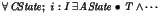
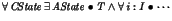

Next: Bibliographical Notes
Up: Refining CSP and Object-Z
Previous: Refining CSP and Object-Z
In Section 19.1.1, it is claimed that failures-divergences refinement
and relational refinement are identical. This is not the case: the
(only) difference is in the upwards applicability rule, which in
the relational case is

but for failures-divergences (and according to Josephs
[134]) is

E.A.Boiten
2002-11-22